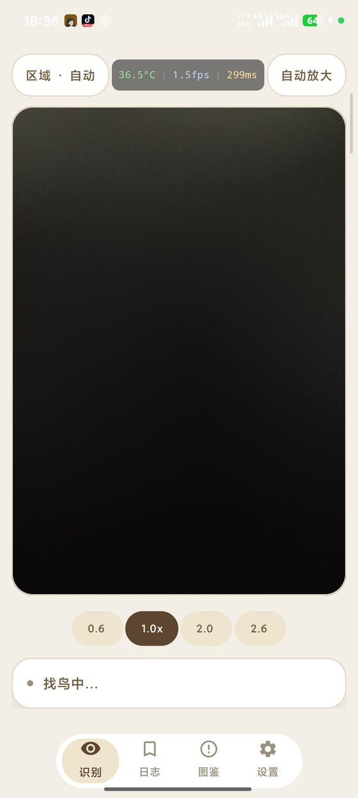
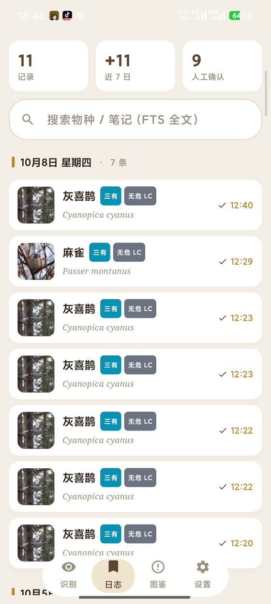
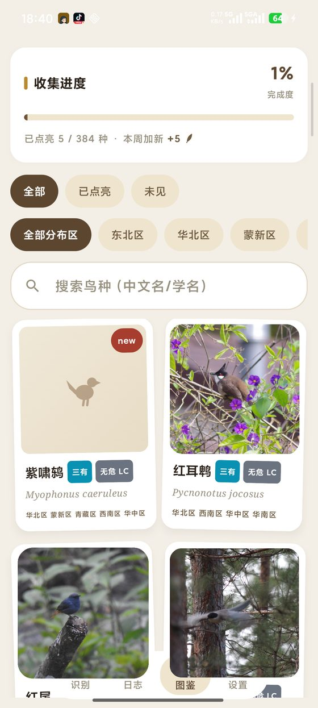
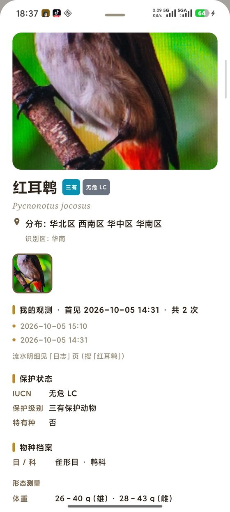

Android · 识别全程离线 · 无账号 · 无广告
举起手机对准鸟
WhatsBird 告诉你它是什么
相机实时帧分析，端侧 AI 当场报出中文名、学名与置信度，并按所在地区和季节重排候选。 照片和观测记录只写本机——飞行模式下也能用。
直链 GitHub Release 资产；正在核对最新版…
核心体验就这几屏




怎么装
- 下载。手机浏览器打开本页点上面的按钮；GitHub 下载慢就用蓝奏云镜像。
- 允许安装未知应用。下载完浏览器会拦一下，点「允许」—— 授权只给浏览器或文件管理器，不是全系统。
- 安装。系统安装器点「下一步 → 完成」。无 root，无其他权限申请。
- 打开。首次会问两个权限：相机必须给，位置可以拒绝—— 拒了照样能识别，只是地理先验退化成按月份的粗平均。模型权重全在包里，装完断网也能用。
升级说明
- 覆盖升级
- 同一把签名密钥，新包直接盖旧包
- 数据保留
- 观测记录、图鉴点亮进度、备注全部保留
- 换手机
- 先在「日志」页导出 CSV，记录只在本机
- 卸载
- 会连同本机记录一起清掉，卸载前先导出
常见问题
能装 iPhone 吗？
不能。这是 Android 应用，走旁路分发（APK 直链），不经过应用商店。
识别不准怎么办？
离线小模型认错很正常。取景页可以手动切区域模型、点选主目标；认错了到「日志」页改判， 改完图鉴里的点亮状态会跟着更新。
为什么包这么大？
模型权重全部打包在安装包里，识别全程离线、不下载任何东西。 换来的是：装完拔网线也能用，照片一次都不出手机。
怎么确认下到的是官方的包？
装完可以在系统「应用信息」里看签名证书指纹，应当是下面这一串（长期不变，等于发布者身份证）：
711F0F9398D2803DB4CD8C4800CB7BCB5F3AAFB3DC6F6549F9FBDA448DC68A76。
文件本身的 SHA-256 见上面的版本列表。
要开定位吗？
可关。开着会用地理位置选区域模型并给分类结果加先验权重；关掉就退化成按月份的粗先验。 照片和记录始终只在本机。
一句话说明白
隐私
照片与观测记录只写本机（files/records/ + Room），没有上传接口；
定位可关闭；地址解析走内置离线区划，不经过任何第三方地理服务；
导出的 CSV 由你自己选保存位置，App 不申请存储权限。
许可
源码按 Apache-2.0。
模型与数据资产有两项例外（protection.json 的 IUCN 字段仅限非商业、
admin_county.ndjson 未获明确再分发许可），完整声明见
LICENSE-MODELS.md。
本页照片来自 iNaturalist 的 CC0 / CC-BY 图库，署名见
shots/manifest.json。
版本记录
正在读取 GitHub Release…